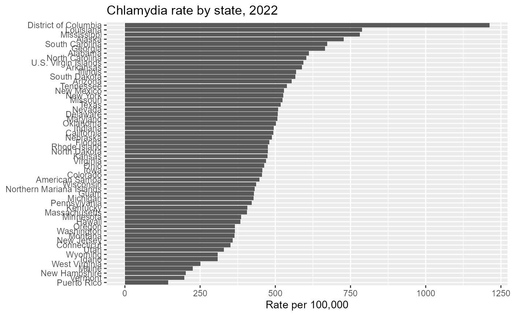
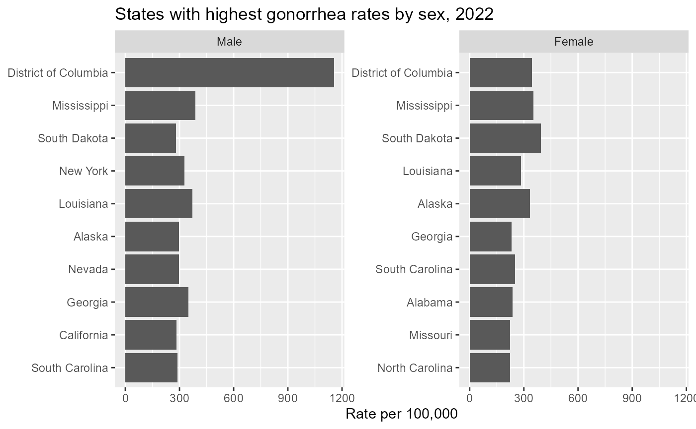
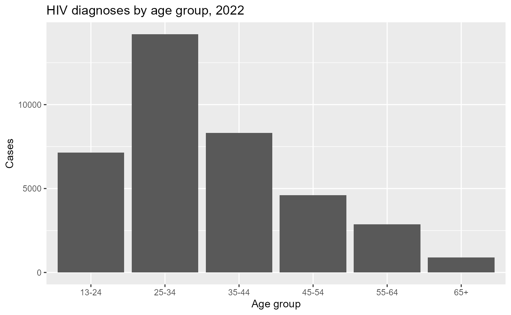
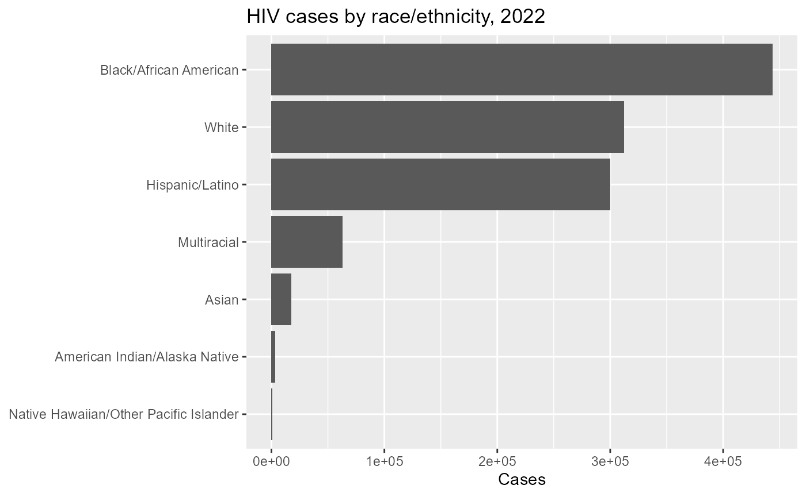
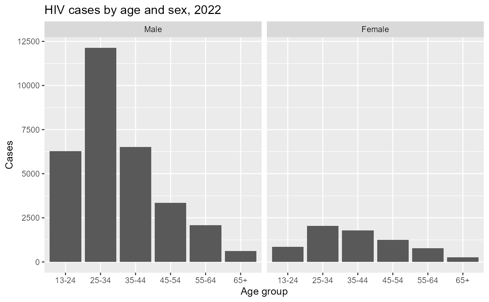
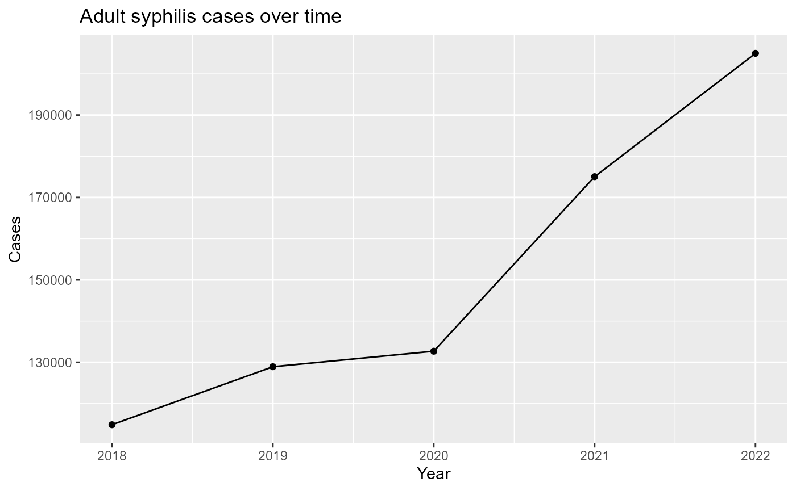

CDCAtlas provides R functions for retrieving public health surveillance data from CDC AtlasPlus.
This vignette introduces common use patterns:
- retrieving state- and county-level data
- querying different diseases
- using sex, age, and race/ethnicity stratification
- comparing rates across groups
- preparing AtlasPlus data for plotting and analysis
This vignette does not cover tract-level extrapolation. That is an advanced use case covered separately.
Installation
# install.packages("remotes")
remotes::install_github("VagishHemmige/CDCAtlas")Basic query: state-level chlamydia data
A simple query retrieves one disease, one geography level, and one year.
chlamydia_state <- get_atlas(
disease = "chlamydia",
geography = "state",
year = 2022
)
head(chlamydia_state)
#> indicator year geography data_status race_ethnicity sex
#> 1 Chlamydia 2022 Alabama Not Suppressed All races/ethnicities Both sexes
#> 2 Chlamydia 2022 Alaska Not Suppressed All races/ethnicities Both sexes
#> 3 Chlamydia 2022 Arizona Not Suppressed All races/ethnicities Both sexes
#> 4 Chlamydia 2022 Arkansas Not Suppressed All races/ethnicities Both sexes
#> 5 Chlamydia 2022 California Not Suppressed All races/ethnicities Both sexes
#> 6 Chlamydia 2022 Colorado Not Suppressed All races/ethnicities Both sexes
#> age transmission rate100000 cases population
#> 1 All age groups All transmission categories 612.1 31060 5074296
#> 2 All age groups All transmission categories 727.7 5338 733583
#> 3 All age groups All transmission categories 554.4 40796 7359197
#> 4 All age groups All transmission categories 588.3 17918 3045637
#> 5 All age groups All transmission categories 493.6 192647 39029342
#> 6 All age groups All transmission categories 456.3 26646 5839926
#> lowerci_rate upperci_rate rse lowerci_cases upperci_cases fips
#> 1 NA NA NA NA NA 01
#> 2 NA NA NA NA NA 02
#> 3 NA NA NA NA NA 04
#> 4 NA NA NA NA NA 05
#> 5 NA NA NA NA NA 06
#> 6 NA NA NA NA NA 08The returned object is a data frame that can be used directly with tidyverse tools.
glimpse(chlamydia_state)
#> Rows: 57
#> Columns: 17
#> $ indicator <fct> "Chlamydia", "Chlamydia", "Chlamydia", "Chlamydia", "Ch…
#> $ year <dbl> 2022, 2022, 2022, 2022, 2022, 2022, 2022, 2022, 2022, 2…
#> $ geography <fct> "Alabama", "Alaska", "Arizona", "Arkansas", "California…
#> $ data_status <fct> "Not Suppressed", "Not Suppressed", "Not Suppressed", "…
#> $ race_ethnicity <fct> "All races/ethnicities", "All races/ethnicities", "All …
#> $ sex <fct> "Both sexes", "Both sexes", "Both sexes", "Both sexes",…
#> $ age <fct> "All age groups", "All age groups", "All age groups", "…
#> $ transmission <fct> "All transmission categories", "All transmission catego…
#> $ rate100000 <dbl> 612.1, 727.7, 554.4, 588.3, 493.6, 456.3, 143.8, 593.9,…
#> $ cases <dbl> 31060, 5338, 40796, 17918, 192647, 26646, 4633, 626, NA…
#> $ population <dbl> 5074296, 733583, 7359197, 3045637, 39029342, 5839926, 3…
#> $ lowerci_rate <dbl> NA, NA, NA, NA, NA, NA, NA, NA, NA, NA, NA, NA, NA, NA,…
#> $ upperci_rate <dbl> NA, NA, NA, NA, NA, NA, NA, NA, NA, NA, NA, NA, NA, NA,…
#> $ rse <dbl> NA, NA, NA, NA, NA, NA, NA, NA, NA, NA, NA, NA, NA, NA,…
#> $ lowerci_cases <dbl> NA, NA, NA, NA, NA, NA, NA, NA, NA, NA, NA, NA, NA, NA,…
#> $ upperci_cases <dbl> NA, NA, NA, NA, NA, NA, NA, NA, NA, NA, NA, NA, NA, NA,…
#> $ fips <chr> "01", "02", "04", "05", "06", "08", "72", "78", "70", "…Plot state-level rates
chlamydia_state %>%
filter(!is.na(rate100000)) %>%
ggplot(aes(x = reorder(geography, rate100000), y = rate100000)) +
geom_col() +
coord_flip() +
labs(
title = "Chlamydia rate by state, 2022",
x = NULL,
y = "Rate per 100,000"
)
Query county-level data
AtlasPlus can also return county-level data for supported diseases.
chlamydia_county <- get_atlas(
disease = "chlamydia",
geography = "county",
year = 2022
)
head(chlamydia_county)
#> indicator year geography data_status race_ethnicity
#> 1 Chlamydia 2022 Abbeville County, SC Not Suppressed All races/ethnicities
#> 2 Chlamydia 2022 Ada County, ID Not Suppressed All races/ethnicities
#> 3 Chlamydia 2022 Adair County, IA Not Suppressed All races/ethnicities
#> 4 Chlamydia 2022 Acadia Parish, LA Not Suppressed All races/ethnicities
#> 5 Chlamydia 2022 Accomack County, VA Not Suppressed All races/ethnicities
#> 6 Chlamydia 2022 Adams County, CO Not Suppressed All races/ethnicities
#> sex age transmission rate100000 cases
#> 1 Both sexes All age groups All transmission categories 496.8 121
#> 2 Both sexes All age groups All transmission categories 403.3 2093
#> 3 Both sexes All age groups All transmission categories 186.8 14
#> 4 Both sexes All age groups All transmission categories 676.7 384
#> 5 Both sexes All age groups All transmission categories 524.2 174
#> 6 Both sexes All age groups All transmission categories 591.8 3122
#> population lowerci_rate upperci_rate rse lowerci_cases upperci_cases fips
#> 1 24356 NA NA NA NA NA 45001
#> 2 518907 NA NA NA NA NA 16001
#> 3 7494 NA NA NA NA NA 19001
#> 4 56744 NA NA NA NA NA 22001
#> 5 33191 NA NA NA NA NA 51001
#> 6 527575 NA NA NA NA NA 08001A common workflow is to identify counties with the highest reported rates.
chlamydia_county %>%
filter(!is.na(rate100000)) %>%
arrange(desc(rate100000)) %>%
select(geography, cases, rate100000) %>%
head(10)
#> geography cases rate100000
#> 1 Reeves County, TX 552 4277.4
#> 2 Todd County, SD 340 3687.6
#> 3 Kusilvak Census Area, AK 287 3467.0
#> 4 Dewey County, SD 174 3385.2
#> 5 Bethel Census Area, AK 528 2892.0
#> 6 Nome Census Area, AK 281 2857.1
#> 7 Oglala Lakota County, SD 359 2655.5
#> 8 Mellette County, SD 40 2114.2
#> 9 Northwest Arctic Borough, AK 150 2020.7
#> 10 Tunica County, MS 186 1966.6Stratification by sex
Many AtlasPlus endpoints support stratification. For example, we can retrieve state-level gonorrhea data by sex.
gonorrhea_sex <- get_atlas(
disease = "gonorrhea",
geography = "state",
year = 2022,
stratify_by = "sex"
)
head(gonorrhea_sex)
#> indicator year geography data_status race_ethnicity sex
#> 1 Gonorrhea 2022 Alabama Not Suppressed All races/ethnicities Male
#> 2 Gonorrhea 2022 Alabama Not Suppressed All races/ethnicities Female
#> 3 Gonorrhea 2022 Alaska Not Suppressed All races/ethnicities Male
#> 4 Gonorrhea 2022 Alaska Not Suppressed All races/ethnicities Female
#> 5 Gonorrhea 2022 Arizona Not Suppressed All races/ethnicities Male
#> 6 Gonorrhea 2022 Arizona Not Suppressed All races/ethnicities Female
#> age transmission rate100000 cases population
#> 1 All age groups All transmission categories 279.7 6901 2467360
#> 2 All age groups All transmission categories 238.3 6213 2606936
#> 3 All age groups All transmission categories 296.7 1145 385947
#> 4 All age groups All transmission categories 333.4 1159 347636
#> 5 All age groups All transmission categories 270.1 9936 3679034
#> 6 All age groups All transmission categories 177.2 6522 3680163
#> lowerci_rate upperci_rate rse lowerci_cases upperci_cases fips
#> 1 NA NA NA NA NA 01
#> 2 NA NA NA NA NA 01
#> 3 NA NA NA NA NA 02
#> 4 NA NA NA NA NA 02
#> 5 NA NA NA NA NA 04
#> 6 NA NA NA NA NA 04Now we can compare rates by sex within each state.
gonorrhea_sex %>%
filter(!is.na(rate100000)) %>%
group_by(sex) %>%
slice_max(rate100000, n = 10, with_ties = FALSE) %>%
ungroup() %>%
ggplot(aes(x = reorder(geography, rate100000), y = rate100000)) +
geom_col() +
coord_flip() +
facet_wrap(~ sex, scales = "free_y") +
labs(
title = "States with highest gonorrhea rates by sex, 2022",
x = NULL,
y = "Rate per 100,000"
)
Stratification by age
AtlasPlus also supports age-stratified queries for many disease/geography combinations.
hiv_age <- get_atlas(
disease = "hiv",
geography = "state",
year = 2022,
stratify_by = "age"
)
head(hiv_age)
#> indicator year geography data_status race_ethnicity sex
#> 1 HIV diagnoses 2022 Alabama Not Suppressed All races/ethnicities Both sexes
#> 2 HIV diagnoses 2022 Alabama Not Suppressed All races/ethnicities Both sexes
#> 3 HIV diagnoses 2022 Alabama Not Suppressed All races/ethnicities Both sexes
#> 4 HIV diagnoses 2022 Alabama Not Suppressed All races/ethnicities Both sexes
#> 5 HIV diagnoses 2022 Alabama Not Suppressed All races/ethnicities Both sexes
#> 6 HIV diagnoses 2022 Alabama Not Suppressed All races/ethnicities Both sexes
#> age transmission rate100000 cases population lowerci_rate
#> 1 13-24 All transmission categories 19.9 162 812982 NA
#> 2 25-34 All transmission categories 34.5 227 657946 NA
#> 3 35-44 All transmission categories 24.0 150 625076 NA
#> 4 45-54 All transmission categories 13.6 84 618962 NA
#> 5 55-64 All transmission categories 8.2 54 660461 NA
#> 6 65+ All transmission categories 1.3 12 905888 NA
#> upperci_rate rse lowerci_cases upperci_cases fips
#> 1 NA NA NA NA 01
#> 2 NA NA NA NA 01
#> 3 NA NA NA NA 01
#> 4 NA NA NA NA 01
#> 5 NA NA NA NA 01
#> 6 NA NA NA NA 01We can summarize national patterns by aggregating across states.
hiv_age_summary <- hiv_age %>%
group_by(age) %>%
summarize(
cases = sum(cases, na.rm = TRUE),
.groups = "drop"
)
hiv_age_summary
#> # A tibble: 6 × 2
#> age cases
#> <fct> <dbl>
#> 1 13-24 35384
#> 2 25-34 180838
#> 3 35-44 220487
#> 4 45-54 242846
#> 5 55-64 299331
#> 6 65+ 163336
ggplot(hiv_age_summary, aes(x = age, y = cases)) +
geom_col() +
labs(
title = "HIV cases by age group, 2022",
x = "Age group",
y = "Cases"
)
Stratification by race/ethnicity
CDC AtlasPlus commonly uses a combined race/ethnicity variable rather than separate race and Hispanic ethnicity fields.
hiv_race <- get_atlas(
disease = "hiv",
geography = "state",
year = 2022,
stratify_by = "race"
)
head(hiv_race)
#> indicator year geography data_status
#> 1 HIV diagnoses 2022 Alabama Not Suppressed
#> 2 HIV diagnoses 2022 Alabama Not Suppressed
#> 3 HIV diagnoses 2022 Alabama Not Suppressed
#> 4 HIV diagnoses 2022 Alabama Not Suppressed
#> 5 HIV diagnoses 2022 Alabama Not Suppressed
#> 6 HIV diagnoses 2022 Alabama Not Suppressed
#> race_ethnicity sex age
#> 1 American Indian/Alaska Native Both sexes Ages 13 years and older
#> 2 Asian Both sexes Ages 13 years and older
#> 3 Black/African American Both sexes Ages 13 years and older
#> 4 Hispanic/Latino Both sexes Ages 13 years and older
#> 5 Native Hawaiian/Other Pacific Islander Both sexes Ages 13 years and older
#> 6 White Both sexes Ages 13 years and older
#> transmission rate100000 cases population lowerci_rate
#> 1 All transmission categories 7.9 2 25389 NA
#> 2 All transmission categories 3.0 2 66122 NA
#> 3 All transmission categories 39.1 434 1109054 NA
#> 4 All transmission categories 20.8 42 202304 NA
#> 5 All transmission categories 45.8 1 2184 NA
#> 6 All transmission categories 5.9 167 2819309 NA
#> upperci_rate rse lowerci_cases upperci_cases fips
#> 1 NA NA NA NA 01
#> 2 NA NA NA NA 01
#> 3 NA NA NA NA 01
#> 4 NA NA NA NA 01
#> 5 NA NA NA NA 01
#> 6 NA NA NA NA 01A useful first look is to compare total reported cases by race/ethnicity.
hiv_race_summary <- hiv_race %>%
group_by(race_ethnicity) %>%
summarize(
cases = sum(cases, na.rm = TRUE),
.groups = "drop"
) %>%
arrange(desc(cases))
hiv_race_summary
#> # A tibble: 7 × 2
#> race_ethnicity cases
#> <fct> <dbl>
#> 1 Black/African American 443738
#> 2 White 312384
#> 3 Hispanic/Latino 300103
#> 4 Multiracial 63204
#> 5 Asian 17804
#> 6 American Indian/Alaska Native 3364
#> 7 Native Hawaiian/Other Pacific Islander 997
ggplot(hiv_race_summary, aes(x = reorder(race_ethnicity, cases), y = cases)) +
geom_col() +
coord_flip() +
labs(
title = "HIV cases by race/ethnicity, 2022",
x = NULL,
y = "Cases"
)
Multiple stratification variables
You can request combinations of stratification variables when supported by the underlying AtlasPlus endpoint. For example, HIV data can be queried by both sex and age.
hiv_age_sex <- get_atlas(
disease = "hiv",
geography = "state",
year = 2022,
stratify_by = c("sex", "age")
)
head(hiv_age_sex)
#> indicator year geography data_status race_ethnicity sex age
#> 1 HIV diagnoses 2022 Alabama Not Suppressed All races/ethnicities Male 13-24
#> 2 HIV diagnoses 2022 Alabama Not Suppressed All races/ethnicities Male 25-34
#> 3 HIV diagnoses 2022 Alabama Not Suppressed All races/ethnicities Male 35-44
#> 4 HIV diagnoses 2022 Alabama Not Suppressed All races/ethnicities Male 45-54
#> 5 HIV diagnoses 2022 Alabama Not Suppressed All races/ethnicities Male 55-64
#> 6 HIV diagnoses 2022 Alabama Not Suppressed All races/ethnicities Male 65+
#> transmission rate100000 cases population lowerci_rate
#> 1 All transmission categories 34.9 143 410156 NA
#> 2 All transmission categories 57.8 188 325041 NA
#> 3 All transmission categories 33.6 102 303880 NA
#> 4 All transmission categories 19.2 58 301809 NA
#> 5 All transmission categories 11.3 36 318548 NA
#> 6 All transmission categories 1.3 5 399964 NA
#> upperci_rate rse lowerci_cases upperci_cases fips
#> 1 NA NA NA NA 01
#> 2 NA NA NA NA 01
#> 3 NA NA NA NA 01
#> 4 NA NA NA NA 01
#> 5 NA NA NA NA 01
#> 6 NA NA NA NA 01This allows direct comparison of age distributions by sex.
hiv_age_sex_summary <- hiv_age_sex %>%
group_by(sex, age) %>%
summarize(
cases = sum(cases, na.rm = TRUE),
.groups = "drop"
)
hiv_age_sex_summary
#> # A tibble: 12 × 3
#> sex age cases
#> <fct> <fct> <dbl>
#> 1 Male 13-24 29114
#> 2 Male 25-34 153452
#> 3 Male 35-44 171084
#> 4 Male 45-54 175608
#> 5 Male 55-64 228524
#> 6 Male 65+ 124363
#> 7 Female 13-24 6246
#> 8 Female 25-34 27232
#> 9 Female 35-44 49197
#> 10 Female 45-54 66927
#> 11 Female 55-64 70349
#> 12 Female 65+ 38723
ggplot(hiv_age_sex_summary, aes(x = age, y = cases)) +
geom_col() +
facet_wrap(~ sex) +
labs(
title = "HIV cases by age and sex, 2022",
x = "Age group",
y = "Cases"
)
Comparing years
You can also query multiple years and compare trends over time.
syphilis_years <- get_atlas(
disease = "adult syphilis",
geography = "state",
year = 2018:2022
)
head(syphilis_years)
#> indicator year geography data_status
#> 1 Primary and Secondary Syphilis 2018 Alabama Not Suppressed
#> 2 Primary and Secondary Syphilis 2019 Alabama Not Suppressed
#> 3 Primary and Secondary Syphilis 2020 Alabama Not Suppressed
#> 4 Primary and Secondary Syphilis 2021 Alabama Not Suppressed
#> 5 Primary and Secondary Syphilis 2022 Alabama Not Suppressed
#> 6 Primary and Secondary Syphilis 2018 Alaska Not Suppressed
#> race_ethnicity sex age transmission
#> 1 All races/ethnicities Both sexes All age groups All transmission categories
#> 2 All races/ethnicities Both sexes All age groups All transmission categories
#> 3 All races/ethnicities Both sexes All age groups All transmission categories
#> 4 All races/ethnicities Both sexes All age groups All transmission categories
#> 5 All races/ethnicities Both sexes All age groups All transmission categories
#> 6 All races/ethnicities Both sexes All age groups All transmission categories
#> rate100000 cases population lowerci_rate upperci_rate rse lowerci_cases
#> 1 9.8 477 4887681 NA NA NA NA
#> 2 12.6 618 4903185 NA NA NA NA
#> 3 10.5 529 5024279 NA NA NA NA
#> 4 15.1 761 5039877 NA NA NA NA
#> 5 23.5 1190 5074296 NA NA NA NA
#> 6 7.5 55 735139 NA NA NA NA
#> upperci_cases fips
#> 1 NA 01
#> 2 NA 01
#> 3 NA 01
#> 4 NA 01
#> 5 NA 01
#> 6 NA 02For example, compare national totals by year.
syphilis_trend <- syphilis_years %>%
group_by(year) %>%
summarize(
cases = sum(cases, na.rm = TRUE),
.groups = "drop"
)
syphilis_trend
#> # A tibble: 5 × 2
#> year cases
#> <dbl> <dbl>
#> 1 2018 114851
#> 2 2019 128918
#> 3 2020 132684
#> 4 2021 175046
#> 5 2022 204975
ggplot(syphilis_trend, aes(x = year, y = cases)) +
geom_line() +
geom_point() +
labs(
title = "Adult syphilis cases over time",
x = "Year",
y = "Cases"
)
Working with censored or missing values
CDC AtlasPlus may suppress or censor some values, especially for
small counts. Depending on the disease and geography, cases
or rate100000 may be missing.
A common first step is to inspect missingness.
Choosing diseases and stratification variables
The available diseases and stratification variables depend on CDC AtlasPlus. Common disease values include:
get_atlas(disease = "hiv", geography = "state", year = 2022)
get_atlas(disease = "chlamydia", geography = "state", year = 2022)
get_atlas(disease = "gonorrhea", geography = "state", year = 2022)
get_atlas(disease = "adult syphilis", geography = "state", year = 2022)
get_atlas(disease = "tuberculosis", geography = "state", year = 2022)Next steps
After getting comfortable with basic queries, consider:
- querying multiple diseases
- comparing state and county results
- using sex, age, and race/ethnicity stratification
- joining AtlasPlus data to Census or spatial data
- using advanced vignettes for tract-level extrapolation and geographic access analyses
See ?get_atlas for full argument documentation.